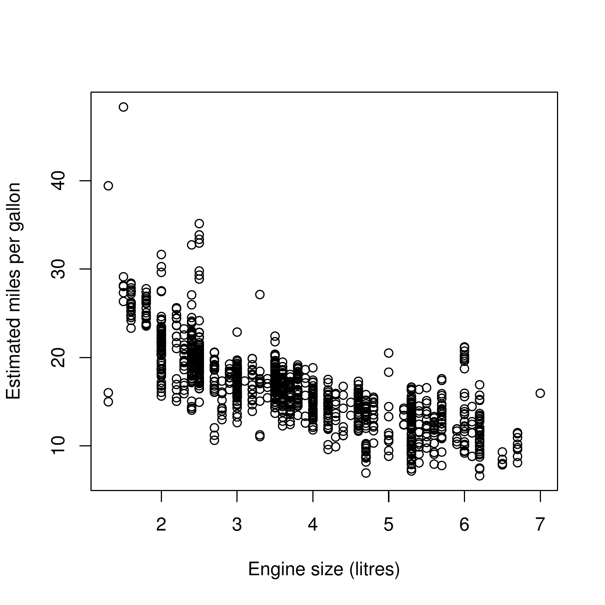

1 Introduction to Experimental Design
1.1 Modelling and Inference
In previous courses, you will have met the concept of statistical inference: using statistical methods to learn about the characteristics of some population or process given suitable data. Often, we will want to make inferences about relationships between variables. You will have seen how to do this using statistical models.
Suppose we wish to investigate the relationship between car engine size and fuel economy. Data are available from the USA’s Department of Energy, and are plotted in Figure 1.1.
We can fit various models to these data such as \[Y_i=\beta_0 + \beta_1 x_i + \varepsilon_i\] or \[Y_i=\beta_0 + \beta_1 x_i + \beta_2x_i^2 + \varepsilon_i\] with \(Y_i\) defined to be the \(i\)th car’s estimated fuel economy, and \(x_i\) the corresponding engine size. We can find the most appropriate model using suitable statistical procedures, and provide a quantitative description of the relationship between fuel economy and engine size.
1.2 Design aims
In almost all your statistics courses so far, you will only have considered the analysis of existing datasets. This module is concerned with the design of datasets. Suppose a car manufacturer wishes to optimise the fuel economy of a particular model of car, by varying particular factors such as engine size, weight, aerodynamics, choice of transmission and so on. The manufacturer can build a prototype with a specified engine size, weight etc. and then test it for fuel efficiency. But building a prototype for every possible combination of these factors is not practical. Instead, the manufacturer could build a limited number of prototypes, and then from the resulting data construct a statistical model to predict the fuel efficiency under any combination of factors. But how many prototypes should the manufacturer build, and what should the choices of design feature be for each prototype?
1.3 Design notation
We consider an experiment in which we are investigating the effect of a number of explanatory variables or covariates \(x_1, x_2, \ldots x_m\) on a response variable \(y\). The element of design is that we can choose the values of \(x_1, x_2, \ldots x_m\) from a set known as the design region, which can be thought of as choosing a point in a \(m\)-dimensional space. With these design points we could then construct an experiment and measure the response \(y\). The explanatory variable may be quantitative (e.g. the drug dose in milligrams) or qualitative (e.g. the presence/absence of a treatment). A variable may also be qualitative but with more than two levels (eg ‘diet’ consisting of vegan, vegetarian meat eater etc). We shall generally think of the response variable as quantitative and real-valued, although this will not be true of all experiments.
The collection of points chosen in the design region at which to take observations is known as the design of the experiment. Note that more than one observation may be taken at the same point; this is known as replication, and may be an important feature of a design.
1.4 Some issues to consider in the design of experiments
What is the purpose of the investigation?
A good design for one purpose is not guaranteed to be a good design for another. Two broad objectives that we will consider areInference: establishing whether there is a relationship between the response variable and the explanatory variables, and describing the nature of any such relationship.
Prediction: estimating the value of the response variable at untried values of explanatory variables.
How will we achieve these objectives?
By using appropriate statistical models. You will have already seen in other modules the role of statistical models in both inference and prediction.What class of statistical models will we consider?
In this module, we restrict our attention to linear models. This is sufficient to cover a very wide range of applications. In practice, this requires the response variable to be continuous (or it must at least be sensible to treat the response variable as continuous).What are we looking for in a good design?
The key concept is efficiency. Assuming there is a cost to collecting data, we want to meet the objectives of the investigation using as little data as possible.
In the next section, we briefly recap the theory of linear models, considering both parameter estimation for inference and prediction. Throughout, we consider how to design efficiently.